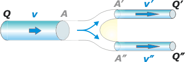

NO ME SALEN
(PROBLEMAS RESUELTOS DE BIOFÍSICA DEL CBC)
FLUIDOS
|
|

|
| |

|
EM18) Un caño de 4 cm² de sección por el que fluye un líquido con velocidad V y caudal Q se
divide en dos caños iguales, en paralelo, de 1 cm² de sección cada uno. Entonces, en
cada uno de esos caños la velocidad y el caudal de líquido son, respectivamente:
a) V/2 y Q/2 b) 2V y Q c) V y Q/2
d) V y Q e) V/2 y Q f) 2V y Q/2 |
|
Este es en ejercicio mega, archi, súper, giga, recontra, hipersencillo. No debería hacerlo. Pero voy a aprovecharlo sólo para que le prestes atención al modo en que lo resuelvo, esto es: para contárselo a otro, en este caso a vos. Lo que tiene de importante esto es que en algún momento vos vas a tener que contarle lo que sabés a otra persona: seguramente un docente, seguramente en un examen (este preámbulo es todo un tema, y te sugiero que le prestes atención).
Lo primero que hago es un garabato según voy interpretando el enunciado. Habitualmente tengo que tachar, retroceder, corregir, rehacer... según el grado de dificultad con que está expresado el ejercicio, o el grado de atención que tengo, etcétera. Pero finalmente queda un esquema, que es una herramienta importante porque tiene implícita la definición de términos y símbolos que después aparecen en el álgebra. Acá va el mío: |
|
|
|  |
|
|
Y ahora a los bifes. El principio de continuidad garantiza que todo lo que entra por un lado salga por el otro lado en el mismo intervalo de tiempo; o sea, que el caudal de entrada, Q, sea igual al caudal de salida QS. Pero, por otro lado, el fluido sale por dos conductos, de modo que el caudal de salida se reparte en dos cudales, Q' y Q''.
Q = QS = Q' + Q''
Es demasiado obvio que si las secciones de los tubos de salida son iguales, también lo serán las velocidades y los caudales en cada uno; de modo que podemos escribir:
Q = 2 Q' [1]
Con esto ya contestamos la mitad del ejercicio. Pero falta la cuestión de la velocidad y eso nos vuelve a requerir el asunto de la continuidad:
Q = A . v [2]
Q' = A' . v' [3]
Y por otro lado tenemos los datos que relacionan las áreas de los tubos: si A = 4 cm² y A' = 1 cm², entonces
A = 4 . A' [4]
(chocolate por la noticia). Un cachito de álgebra y listo: meto [2] y [3] en [1] y en esa expresión reemplazo [4]
A . v = 2 . A' . v'
4 . A' . v = 2 . A' . v'
Simplifico y ya tengo la respuesta que faltaba. |
|
No pases a otro ejercicio. Tomate un descanso y leete esta ciruela.
|
|
|
|
|
OBSERVACION: En un examen, no es necesario que seas tan formal. Mis colegas -y yo mismo- no somos tan exigentes, y entendemos que la gramática de la Matemática y la Física se adquieren de a poco, como toda gramática. Pero lo que mi experiencia me indica es que cuanto más te ocupás del asunto más fáciles te resultan los ejercicios. |
|
|
DESAFÍO: Supongamos que ahora son tres los tubos a la salida y 2 cm² la sección en cada uno de ellos. Y replanteá el asunto... obvio. |
|
 |
| |
|
| Algunos derechos reservados.
Se permite su reproducción citando la fuente. Siempre que hubo buen tiempo, terminó lloviendo. Última actualización ene-08. Buenos Aires, Argentina. |
|
|
| | |
|
|